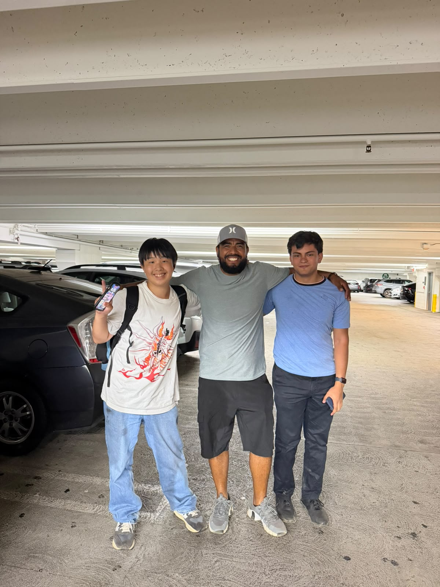

Aquí mostraré un poco de mi propia persona y algunas de mis fotos y canciones
Hola, me llamo Jose Angel Trigueros Zalas, nací en Los Mochis, Sin. MX. Actualmente soy estudiante de preparatoria, buscando "descubrirme" y sin un propósito e identidad clara.
Sufrí bullying toda mi infancia por ser diferente y no haber desarrollado plenamente el español, por lo que mis padres decidieron darme clases particulares y no tuve clases en escuelas normales hasta la secundaria.
Viví un corto tiempo (unos 6-8 meses) en EEUU donde logré hacer varios amigos que extraño mucho y sentí que encajaba muy fácil, además que explotó mi obsesión por las culturas de otros países (en especial de RU, US, DE y UK).
Tras un exceso de malos hábitos decidí despertar y comenzar a valorar quien era, ser extrovertido y aceptar que mi forma de ser no encaja con la cultura en mi país sin adaptarme un poco, mas diverso con mis objetivos y dejar de tomar la escuela como mi único valor.
Me encuentro en una etapa de buscar mi mayor desarrollo personal y tratar de mostrar mi personalidad y gustos a los demás aquí. Busco estudiar mecátronica y física de particulas en Alemania .

La mayoría de mis artistas rusos favoritos estan prohibidos ya sea por la censura occidental, o por la burocracia y censura rusa
Chernikovskaya Hata Youtube.
| Idioma | Nivel | Escuela |
|---|---|---|
| Inglés | C1 | CELE (UAdeO) |
| Alemán | B1.2 | Speakland |
| Ruso | A1.2 | Autodidacta |